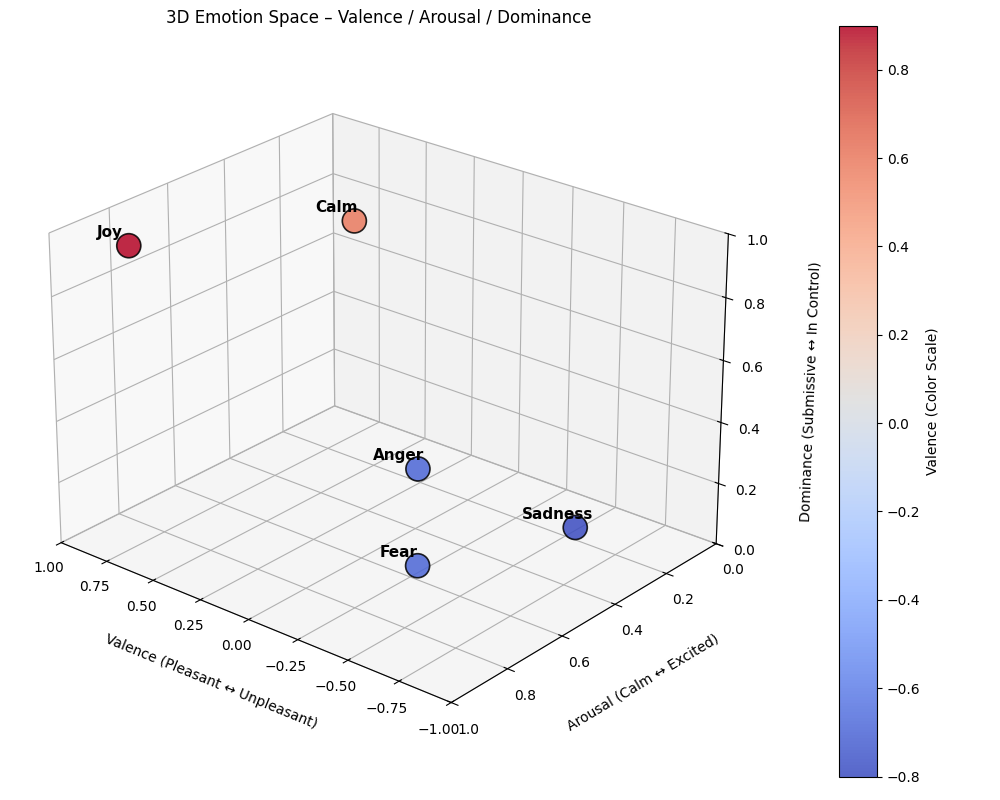

Emotionally Adaptive Chatbots — Building Empathy with AI
Objective
The objective of this project is to design and prototype a VAD (Valence–Arousal–Dominance)-driven AI chatbot capable of detecting emotional tone in text and adapting its responses accordingly. The system aims to model empathy at scale – enabling AI to respond more naturally, reduce frustration, and improve user trust and satisfaction in customer interactions.
Unlike most chatbots that focus purely on semantic accuracy, this project introduces an emotional dimension to communication. By quantifying emotion along three measurable axes – valence (positivity), arousal (intensity), and dominance (control) – the AI can dynamically adjust tone, phrasing, and pacing to match the user’s mood.
The first application focus is customer service, where tone and empathy have measurable business impact:
- Faster conflict resolution
- Higher customer satisfaction
- Reduced escalation to human agents
This study represents Phase 1 of a broader initiative to integrate emotion-aware intelligence into conversational systems, paving the way for emotionally contextual AI experiences across industries.
Business Justification
Customer service interactions are one of the most emotion-sensitive touchpoints for any business. Research consistently shows that:
- 68% of customers leave after feeling “unheard” or “mistreated.”
- Empathetic tone alone can increase resolution satisfaction by 20–30%.
- Emotionally aware automation can reduce human escalations by up to 50%.
Despite these stakes, most AI support systems lack affective awareness – they detect what was said, not how it was said. This leads to robotic replies that often escalate frustration instead of diffusing it.
An emotionally adaptive chatbot could transform these interactions by:
- Detecting low-valence, high-arousal messages (signs of anger or stress).
- Shifting language toward calm, empathetic phrasing.
- Reinforcing positive emotions when valence is high (e.g., celebratory tones for success).
Business Impact Summary:
| Area | Before VAD Integration | After VAD Integration |
|---|---|---|
| Customer satisfaction | Flat or declining | ↑ Significantly (more empathy) |
| Escalation rate | High | ↓ 30–50% |
| Brand perception | “Automated and cold” | “Human, emotionally intelligent” |
| Agent load | Reactive | Proactively managed via emotion detection |
This project’s goal is not only technical but transformational – to make AI a brand ambassador of empathy, not just efficiency.
Data Acquisition Plan
The success of a VAD-driven chatbot relies on the quality and emotional diversity of its data.
This project will develop its dataset through a hybrid acquisition approach, combining real-world data, synthetic augmentation, and manual labeling.
Data Source Candidates
| Source | Description | Emotion Value |
|---|---|---|
| Customer Service Chat Logs (anonymized) | Real-world transcripts showing frustration, satisfaction, or confusion | High realism for tone detection |
| Minecraft Server Chat Logs | Organic, expressive text — ideal for modeling emotional intensity and humor | Great for training contextual VAD detection |
| Open Datasets (GoEmotions, EmoBank) | Public emotion-labeled corpora with VAD mappings | Foundation for baseline modeling |
| Synthetic Data | Generated conversational snippets to fill emotional “gaps” | Balanced representation across emotion ranges |
Labeling Strategy
Each chat message or utterance will be annotated along the Valence–Arousal–Dominance scale:
| Dimension | Scale | Description |
|---|---|---|
| Valence | −1.0 → +1.0 | Positive vs. negative feeling |
| Arousal | 0.0 → 1.0 | Calm vs. intense energy |
| Dominance | 0.0 → 1.0 | Powerless vs. confident control |
A semi-manual process will be used:
- Human labeling of seed data (for calibration and interpretability).
- Model-assisted VAD prediction using pretrained emotion lexicons.
- Cross-validation and normalization to maintain consistency.
Example schema:
| timestamp | user_input | valence | arousal | dominance |
|---|---|---|---|---|
| 2025-10-12 18:21:10 | “I’ve already tried that three times!” | −0.7 | 0.9 | 0.4 |
| 2025-10-12 18:22:05 | “That worked perfectly, thanks!” | +0.9 | 0.7 | 0.8 |
Feature Engineering and Conceptual Model
Emotional Space Visualization
Below is an example 3D visualization of the Valence–Arousal–Dominance (VAD) space used to model emotional tone within our chatbot.

Engineered Emotional Features
| Feature Name | Description |
|---|---|
emotional_shift |
Measures the change in valence between consecutive messages to detect mood recovery or escalation. |
engagement_intensity |
Weighted blend of arousal and dominance — measures emotional activation. |
response_alignment |
Quantifies how closely the bot’s tone mirrors the user’s VAD state (empathy consistency). |
These features form the foundation for an adaptive response layer, which governs how the chatbot replies based on emotional input.
Prototype Model Flow
- Input Layer: User sends a message.
- VAD Classifier: Predicts valence, arousal, dominance.
- Emotion Policy Engine: Chooses appropriate tone (empathetic, neutral, excited, etc.).
- Response Generator: Produces a reply that matches both semantic and emotional context.
- Feedback Loop: Monitors next message VAD to measure emotional improvement.
User Message → VAD Inference → Emotion Policy → Adaptive Response → Feedback & MemoryImplementation Roadmap (Phase 1)
| Phase | Description | Deliverable |
|---|---|---|
| 1. Data Acquisition & Labeling | Gather chat logs, preprocess, and annotate VAD values. | Initial labeled dataset |
| 2. Exploratory Analysis | Visualize emotional distributions and clusters. | VAD 3D scatter and heatmaps |
| 3. Prototype Model Development | Fine-tune transformer model (text → VAD regression). | Baseline emotion detection model |
| 4. Empathy Policy Layer | Develop rule-based tone adaptation logic. | Adaptive chatbot module |
| 5. Evaluation & Metrics | Test emotional accuracy and satisfaction lift. | Empathy effectiveness report |
Each phase will produce tangible outputs suitable for publication and iteration in future blog posts.
Expected Outcomes
This project aims to produce a working emotional intelligence layer for conversational AI that can:
- Detect user frustration early (low valence, high arousal).
- De-escalate conflict via empathetic tone.
- Sustain positive engagement over long interactions.
- Adapt communication style per emotional context.
The anticipated result is a chatbot that feels more human, both linguistically and psychologically.
Beyond customer service, this framework could later expand into healthcare, education, and personal productivity systems – anywhere empathy and tone influence human experience.
Next Steps and Future Posts
Future blog posts in this series will document:
- Data Collection and Labeling Results — including real examples from chat data.
- VAD Distribution Visuals and Feature Insights.
- Model Architecture Deep Dive — including code snippets and evaluation metrics.
- Empathy Layer Demonstration — with real-time emotional adaptation in simulated conversations.
The final milestone will showcase an interactive demo where users can experience the chatbot’s emotional adaptability firsthand.
Supporting Assets (Planned)
- Notebook 1: Data extraction and preprocessing pipeline
- Notebook 2: VAD labeling and feature visualization
- Notebook 3: Model prototyping and policy testing
- Notebook 4: Business impact simulation and presentation visuals
These assets will be included in future posts to ensure transparency and reproducibility as the project evolves.
This proposal marks the foundation for building emotionally aware, data-driven AI systems – capable of understanding not only language but human experience itself.